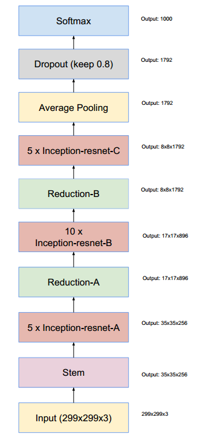
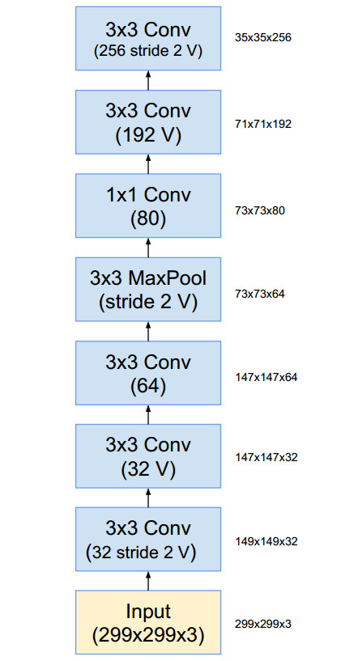
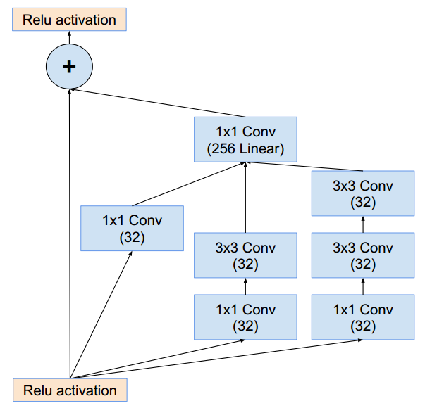
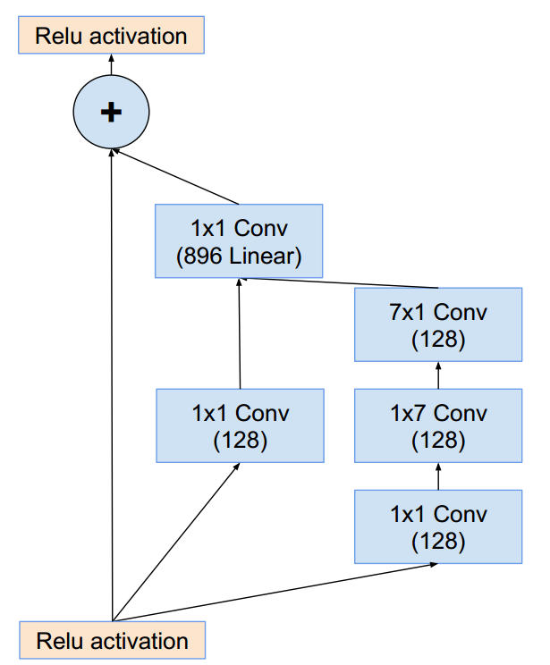
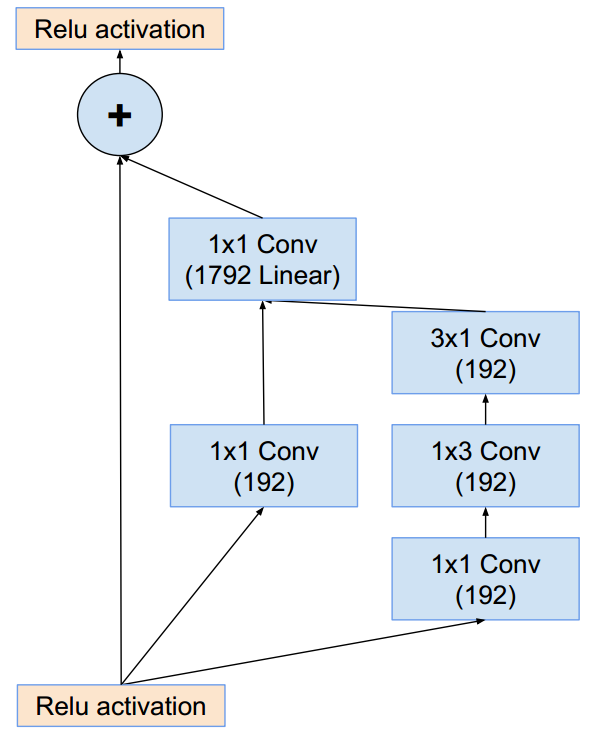
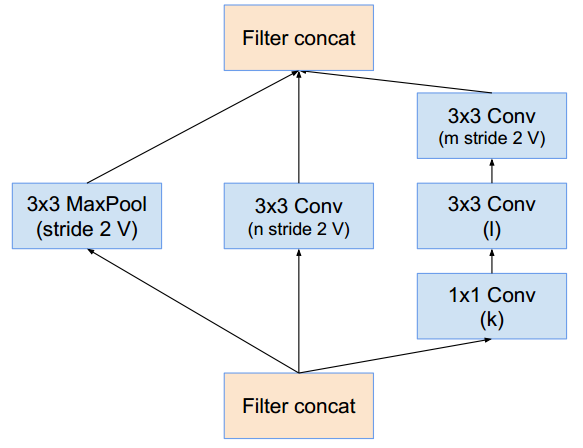
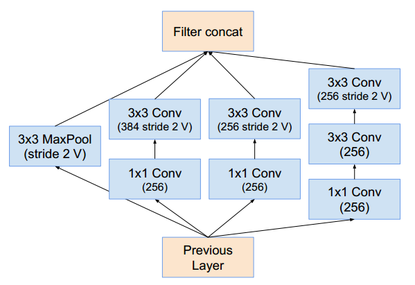

Giới thiệu
Các mô hình thuộc họ Inception-ResNet được phát triển dựa trên ý tưởng là kết hợp skip connection vào các Inception block (các ý tưởng từ ResNet và GoogLeNet). Vì paper này chỉ mang tính thực nghiệm là chính nên mình sẽ không trình bày chi tiết 👀.
Kiến trúc mô hình
Inception-ResNet V1
Về mặt tổng quan, Inception-ResNet V1 có kiến trúc như sau:

Kiến trúc Inception-ResNet V1

Stem của Inception-ResNet V1
Ta sẽ đề cập đến các loại Inception-ResNet block và Reduction:
- Inception-ResNet block: Ta thấy rằng phần “Inception” trong các block này là đơn giản hơn khá nhiều so với các Inception block nguyên mẫu.

Inception-ResNet-A V1

Inception-ResNet-B V1

Inception-ResNet-C V1
- Reduction: Chúng thực hiện nhiệm vụ giảm kích thước (width, height) của các tensor đi một nửa. Kiến trúc của chúng rất giống với các Inception block

Reduction-A

Reduction-B
Inception-ResNet V2
Phiên bản thứ hai của Inception-ResNet có kiến trúc tổng thể giống hệt với phiên bản đầu tiên, ta chỉ có một số thay đổi ở các block Inception-ResNet và Reduction
Tài liệu tham khảo
- Paper Inception-ResNet: https://arxiv.org/abs/1602.07261